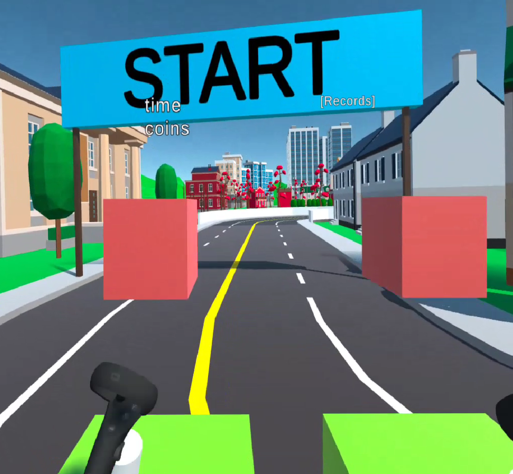

In this post I will summarize the work on the virtual reality project and reflect a bit what I experienced in the implementation process. First of all I should point out that unity is an extremely powerful platform and is easy to use, when having some programming experience. All these things like collision, drag and mass otherwise would be difficult to implement.
In the implementation process I was often improvising a bit to overcome difficulties. For example the braking is still pretty experimental, but works in order to get the corner.
Pressing the trigger button is a bit unrealistic. For future work, one could try to use the angle of the hand controllers, and if the imaginary ski stick points in front, one could give extra drag. If one would spend more time with the pre build unity environment, one could also directly include a collider with the street, such that it is impossible to penetrate the street.
This would also allow to use the gravity of the player, and one would not need to add manually drag when going uphill/downhill
Then it would be also more realistic, because we could directly use the collision framework of unity.
Furthermore I realized that I could strenghen my developer skills, when one needs to find solutions for silly problems like how do I find the best parameter interval, the next time I need to do this, it will be a lot quicker.
My initial idea to use boxes in order to determine, whether the arms are moving up and down in order to execute a push for the player can be tricked, when smartly moving the wrist only. Therefore it could make sense to use the absolute y and z-coordinate of the controllers in order to determine whether a push needs to be performed.

One could for instance press the trigger button during a arm movement, and when releasing the trigger button, one takes the position again. From the difference one can then determine the power of the puch. Such a change could create more realism, but it turned out that this visual aid with the cubes, where the main intention was, to give an orientation for the arm movement, also helps to reduce cyber sickness. The cubes provide a static horizon and reduce the feeling, that the virtual world around is moving, but oneself is standing still.
What I painfully had to learn too in the implementation process is, that it is necessary to test early the version, as I had this stange issue, that there is only one eye rendering. I don’t know what caused this, but I assume, that there had been some incompatibility between the version of the Oculus Plugin and the used unity version. I could not fix this, except rebuilding the entire application again in another unity version.
The slides for the presentation can be found in the github or on this link.